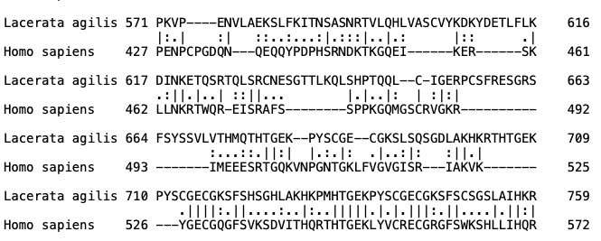
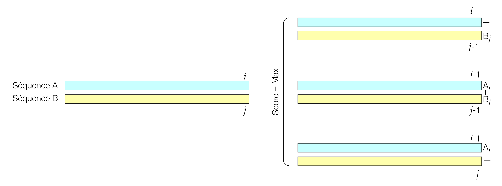
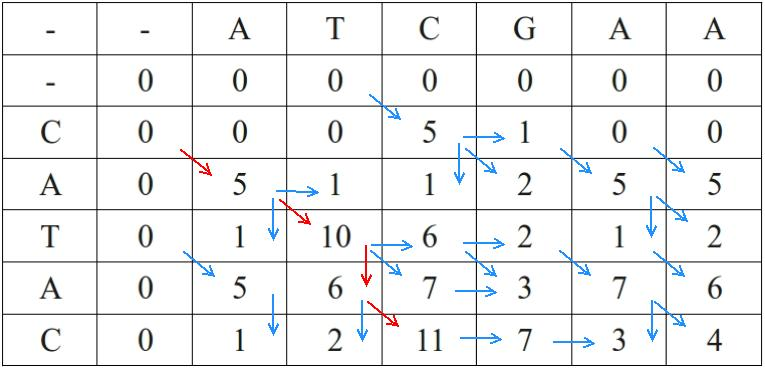
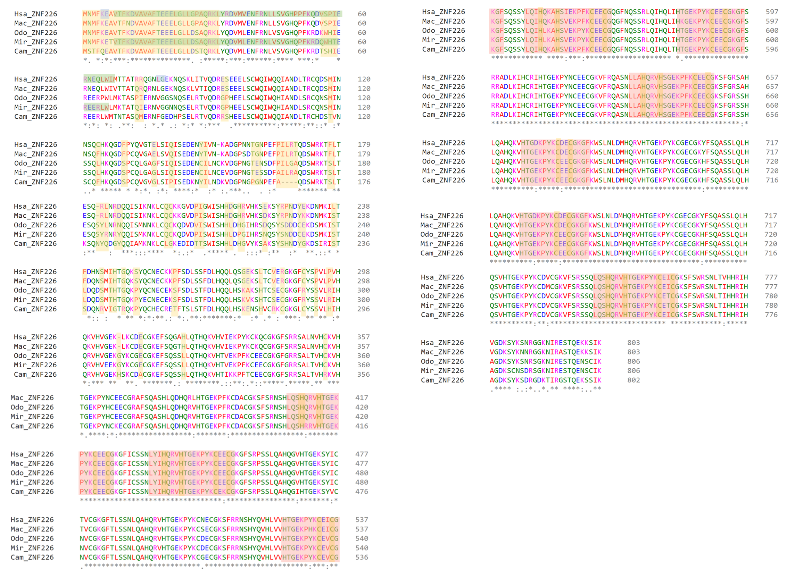

5 Sequence Alignment
Pairwise and Multiple Sequence Alignment Algorithms
5.1 Learning goals
By the end of this chapter you should be able to:
- Explain why biologists align sequences and distinguish similarity from homology, orthologs, and paralogs.
- Describe how pairwise alignment scores are computed from substitution matrices and gap penalties.
- Outline and interpret the Needleman–Wunsch global alignment algorithm and contrast it with Smith–Waterman local alignment.
- Explain the difference between a dynamic versus heuristic programming.
- Explain what a multiple sequence alignment (MSA) is, why it is more informative than pairwise alignment, and summarize major MSA algorithm families.
- Read alignment output critically, recognizing poor alignments and the influence of parameter choices.
5.2 Why align sequences?
Sequence alignment is a core operation in genomics, used whenever you want to compare DNA or protein sequences to ask biological questions1. Typical motivations include inferring gene or protein function for a new sequence by comparing it to known sequences, identifying orthologous genes across species for phylogeny reconstruction, and detecting conserved motifs and domains that may underlie shared structure or regulation1. This chapter covers pairwise sequence alignment (both local and global) before extending these concepts to multiple sequence alignment, where information from many sequences is integrated to reveal patterns invisible in pairwise comparisons1,2.
An algorithm is a step-by-step set of instructions used to solve a problem—a computational protocol. Understanding the algorithms commonly used in sequence analysis helps you recognize their key assumptions and limitations, unveiling the black box mentioned in earlier chapters1.
5.2.1 Similarity, homology, orthologs, paralogs
Alignment provides a similarity score, but what biologists usually care about is homology, meaning shared ancestry rather than just high percent identity1. Two sequences are either homologous or not; there is no partial homology, only stronger or weaker evidence for it1. Orthologs are homologous genes in different species that diverged via a speciation event and usually retain similar function, whereas paralogs are homologous genes within a genome that arose by duplication and often diverge in function over time1. When you use alignment to infer orthology or paralogy, remember that homology is about evolutionary history, not just alignment score, and typically requires integrating tree information as well.
5.2.2 Amino acids versus nucleotides
With nucleotides offering only four different bases, the information content for homology is low, and codon sequences can be degenerate in how they code for amino acids1. In contrast, protein sequences offer up to 20 different amino acid types, vastly increasing the information content1. For identifying homologs, protein sequence comparison is therefore considered superior, providing a deeper look back in time and enabling identification of homologs across the tree of life1. Exceptions include noncoding DNA regions such as introns and intergenic sequences, as well as studies of DNA polymorphisms that distinguish different populations1.
5.2.3 Types of sequence changes
Single nucleotide substitutions are often referred to as either SNPs, as you saw earlier in this course. Another term you might encounter is single nucleotide variants (SNVs), a term used more recently to indicate a low frequency variant, often used more in clinical settings. Additionally, you might encounter the term multi-nucleotide polymorphisms (MNPs). In addition to substitutions, there are short insertion/deletion variants, or indels. Large scale rearrangements are much harder to study given that they violate a lot of the assumptions of most sequencing alignment algorithms. Therefore, we will focus on small changes. It is also worth noting that more algorithms only allow 2 possible variants at any one position. It is important to understand the limitations of the algorithms you use when working with datasets that are complex.
Later in Lab 9, we will visualize sequence variants relative to a reference genome in IGV and describe these sequence changes using Human Genome Variation Society (HGVS) standardized nomenclature1. Specifically, a sequence change in the DNA may or may not impact the protein sequence. Substitutions are designated by a “>” character with the original base before and the substitution after, prefixed by “g.” for genomic sequence (e.g., g.69A>T for A to T substitution at position 69) and “p.” for protein sequence (e.g., p.K23Y for lysine to tyrosine substitution at position 23).
5.3 Pairwise Sequence Alignment
Pairwise sequence alignment arranges two DNA or protein sequences to assess similarity and infer common evolutionary origin1,3,4. Given a pair of sequences, an alignment algorithm inserts gaps as needed to maximize a numerical score defined by a scoring scheme, allowing different alignments to be compared quantitatively1. Global alignment attempts to align sequences from end to end, most appropriate when sequences are expected to be collinear and of similar length1,3. Local alignment searches for the highest-scoring subsequences without requiring full alignment, ideal when proteins share only conserved domains or when short motifs are embedded in otherwise unrelated context1,4.

In the example pairwise sequence above, we see the results of a global sequence alignment between the PRDM9 protein from humans and that of Lacerata agilis which was manually annotated by Chipper Johnson, course LA. Here, vertical lines | indicate identical resides. Substitutions are indicated by one or two dots, indicating the degree of dissimilarity. Gaps can relfect either an insertion in one of the sequences or a deletion in the other one. These are indicated by the - symbol. This output is from the EMBOSS Needle tool that you will be using for your manual annotation projects this semester.
In genome alignment (more on this in the next chapter), it is common to describe a “sample sequence” being compared to a “reference genome sequence,” but in more general alignment problems the two inputs are called the query sequence and the target (or subject) sequence1.
5.3.1 Scoring Alignments
Alignment scores combine a substitution matrix assigning scores to aligned residue pairs and a gap penalty scheme for insertions and deletions1,5,6. For proteins, substitution matrices encode evolutionary and biochemical information: conservative substitutions between similar residues receive positive scores, while rare or structurally disruptive substitutions receive negative scores1,5. Not all identities are scored equally; matching two tryptophans is more informative than matching two alanines because tryptophan is rare and strongly conserved1,6.
PAM (Point Accepted Mutation) matrices, introduced by Margaret Dayhoff, are derived from curated alignments of closely related protein families and model substitution probabilities as proteins diverge over evolutionary time1,5. PAM1 reflects frequencies after one accepted mutation per 100 residues, while higher PAM matrices (e.g., PAM250) approximate more divergent sequences1,5. BLOSUM (Blocks Substitution Matrix) series from Steven and Jorja Henikoff focuses on conserved blocks of distantly related families, with BLOSUM62 widely used as a default in database searches1,6. Low PAM numbers and high BLOSUM numbers emphasize close relationships, while high PAM numbers and low BLOSUM numbers better detect distant homology1,5,6.
Margaret Oakley Dayhoff (1925–1983) was a physical chemist and computational biologist whose work laid the groundwork for modern sequence alignment scoring1,5. From carefully curated multiple sequence alignments of closely related proteins, she defined accepted point mutations and quantified amino-acid substitution frequencies, leading to the PAM model and the first empirically grounded mutation probability matrices1,5. By converting these probabilities into log-odds scores, Dayhoff introduced a rigorous framework that rewards substitutions observed more often than expected by chance and penalizes unlikely changes1,5. This logic underlies essentially all modern substitution matrices and directly informs algorithms such as Needleman–Wunsch, Smith–Waterman, and BLAST1,3,4.
Nucleotide substitution matrices are usually simpler, because there are only four bases and fewer distinct biochemical classes than for amino acids1. In many applications, DNA alignments are scored with uniform match/mismatch schemes (for example, +1 for a match and -1 for a mismatch) or with slightly more refined scoring where transitions (A↔︎G, C↔︎T) receive different penalties from transversions (purine↔︎pyrimidine), reflecting the higher frequency of transitions in real genomic data1. More elaborate nucleotide scoring systems, such as matrices derived from observed substitution patterns in genomic regions, exist but are less commonly used than protein substitution matrices1. Because protein sequences carry higher information content and can leverage sophisticated amino-acid substitution matrices, it is often preferable to translate coding DNA sequences and perform alignments at the protein level when the goal is to detect homology across moderate or large evolutionary distances1.
5.3.2 Gap penalties
Insertions and deletions (indels) in evolutionary history appear as gaps in sequence alignments and must be penalized so that algorithms do not introduce them without strong justification1. Without gap penalties, an alignment algorithm could trivially achieve perfect matches by inserting arbitrarily many gaps, so a realistic scoring system must balance the benefits of aligning additional residues against the cost of adding gaps1. Biologically, single long indels are often more plausible than many short indels, and gap penalty schemes are designed to reflect that intuition1.
In the simplest scheme, a constant (or linear) gap penalty subtracts the same score for each gap position, so a gap of length \((k)\) incurs a cost proportional to \((k)\)1. In this case, the cost of opening a gap and the cost of extending it are identical, so a gap of length 5 is exactly five times more costly than a gap of length 11. More realistic alignments, especially for proteins, generally use an affine gap penalty, which separates the penalty for initiating a gap from the penalty for extending it1. Under an affine model, the cost of a gap of length \((k)\) is given by \[gap cost = a + b k,\]
where \((a)\) is a gap opening penalty and \((b)\) is a gap extension penalty per residue, with \((|a|)\) typically larger than \((|b|)\)1. This favors fewer, longer gaps over many short ones, mirroring the expectation that a single deletion of several residues is more likely than multiple independent single-residue events1.
When you run alignment tools on the web or command line, default gap opening and extension penalties are often optimized for particular scoring matrices and use cases1. Understanding how these parameters influence alignments helps explain phenomena such as long conserved blocks separated by large single gaps or the tendency of some parameter combinations to fragment alignments into many short local matches1. In many practical workflows, end gaps (leading and trailing gaps in global alignment) are either not penalized or penalized differently from internal gaps, especially when one sequence is known to be truncated relative to the other1.
5.3.3 Needleman–Wunsch: Global Alignment
The Needleman–Wunsch algorithm, introduced in 1970, is a dynamic programming method that guarantees an optimal global alignment for two sequences given a specified substitution matrix and gap penalty scheme1,3. The core idea is to systematically evaluate all possible ways of aligning prefixes of the two sequences by filling a matrix of scores and then to recover the best full-length alignment by tracing back through that matrix1,3. This approach avoids exhaustive enumeration of all possible alignments, which would grow combinatorially with sequence length, while still ensuring that the final alignment is optimal under the chosen scoring system1,3. Below is a description of this algorithm, but if you are more of a visual learner, there is a great 15 minute YouTube video on the topic7.
Given sequences of lengths (m) and (n), Needleman–Wunsch constructs a matrix of dimensions ((m+1) (n+1)), where the cell (F_{i,j}) represents the best possible global alignment score for the first (i) residues of sequence 1 and the first (j) residues of sequence 21,3. The first row and first column are initialized with cumulative gap penalties, allowing either sequence to begin with a terminal gap if that yields a higher overall score1. The matrix is then filled row by row or column by column using a recurrence relation that considers the three possible ways to reach each cell: aligning the current pair of residues (diagonal move), inserting a gap in one sequence (vertical move), or inserting a gap in the other (horizontal move)1,3.
In its simplest form with linear gap penalties, the recurrence for \((F_{i,j})\) can be written as
\[F_{i,j} = \max \begin{cases} F_{i-1,j-1} + s(x_i, y_j) \\ F_{i-1,j} + g \\ F_{i,j-1} + g \end{cases} \]
where \((s(x_i, y_j))\) is the substitution score for aligning residues \((x_i)\) and \((y_j)\), and \((g)\) is the (negative) gap penalty1,3. More elaborate formulations using affine gap penalties introduce additional matrices or states to distinguish gap opening from gap extension, but the underlying dynamic programming principle is the same1. Once the matrix is filled, the optimal global alignment score is found in the bottom-right cell \((F_{m,n})\), and a traceback procedure follows the path of choices that led to this score, reconstructing the explicit alignment with matches, mismatches, and gaps1,3.

Pairwise alignment of two nucleotide sequences using the Needleman–Wunsch dynamic programming algorithm for global alignment. The figure shows the scoring matrix used to compare two sequences, with diagonal moves representing matches or mismatches and horizontal or vertical moves representing gaps. The traceback path identifies the optimal global alignment under the chosen scoring scheme. The example illustrates the alignment matrix, scoring scheme, and the role of gaps in producing the final global alignment. Source: Needleman-Wunsch_pairwise_sequence_alignment.png
{kind=link}
5.3.4 Smith–Waterman: Local Alignment
The Smith–Waterman algorithm, introduced in 1981, adapts the dynamic programming framework to local rather than global alignment, focusing on the highest-scoring subsequences of the two inputs1,4. Instead of forcing an alignment from the beginning to the end of both sequences, Smith–Waterman identifies the best local region of similarity, which is especially useful for detecting conserved domains, motifs, or exons embedded in longer, less related sequence contexts1,4. This local strategy is also central to database search tools such as BLAST and FASTA, which conceptually perform many local alignments between a query and entries in a database1. As with global alignment, below is a description of this algorithm, but if you are more of a visual learner, there is a short 2 minute YouTube video on the topic8.


Unlike global alignment algorithms such as Needleman–Wunsch, Smith–Waterman identifies the best-matching subsequences within longer sequences. It uses a dynamic programming algorithm, meaning it finds the highest-scoring matching region between two sequences rather than aligning them end-to-end. Negative scores are reset to zero, and traceback begins at the highest-scoring cell and continues until a zero is reached, which marks the boundary of the local alignment. This makes it especially useful when only a shared region, domain, or motif is expected between the sequences. Together, these panels show both the scoring logic and an example of the matrix used to recover the best local match. Sources: SmithWaterman.svg and Smith-Waterman.jpg.
{kind=link}
{kind=link}
Smith–Waterman uses a similar ((m+1) (n+1)) dynamic programming matrix as Needleman–Wunsch, but modifies the recurrence relation in two key ways1,4. First, the first row and first column are initialized to zero rather than cumulative gap penalties, reflecting the fact that local alignments may begin anywhere in the sequences without penalty1,4. Second, at each cell the algorithm introduces a fourth option in addition to the three used for global alignment: the score zero. The recurrence becomes
\[F_{i,j} = \max \begin{cases} 0 \\ F_{i-1,j-1} + s(x_i, y_j) \\ F_{i-1,j} + g \\ F_{i,j-1} + g \end{cases}\]
ensuring that scores never become negative1,4. Any path that would yield a negative score is instead truncated at zero, effectively “resetting” the alignment and allowing new local alignments to begin internally1,4.
Once the matrix is filled, the starting point for traceback in Smith–Waterman is not the bottom-right cell but the cell with the highest score anywhere in the matrix, which represents the end of the best local alignment1,4. Traceback then proceeds diagonally, vertically, or horizontally following the choices that produced that score, terminating when a cell with score zero is reached1,4. The resulting alignment spans only the high-scoring segment pair (or pairs) and ignores lower-scoring flanking regions, often producing a shorter alignment with higher percent identity and similarity than the corresponding global alignment of the same sequences1,4.
In protein database searching, local alignments are essential because many protein families share only one or a few conserved domains while differing elsewhere, and because databases contain partial sequences, fragments, and alternative isoforms that would not align well under a strict global scheme1. Heuristic methods such as FASTA and BLAST approximate Smith–Waterman’s local alignment behavior while greatly reducing runtime by focusing computation on promising regions of the search space, enabling rapid comparison of a query sequence to millions of database entries1,4.
5.3.5 Basic Local Alignment Search Tool (BLAST)
Introduced on the first day of class, BLAST is the most used bioinformatics tool. No doubt ALL of you have used this tool at some point prior to taking this class at least once if not multiple times. The basic local alignment search tool was first published in 1990 with nearly 80,000 citations to date (last updated 1/19/2026).
One of the best ways to assess the importance of a bioinformatics tool is to check the citation metrics. The best to to use here is not google but instead Web of Science.
Here, you can search a paper (e.g. “Altschul 1990 basic local alignment search tool”). Once you have the paper, you can check the box next to the result that you want to analyze. Then, in the top right, click “Citation Report”. In addition to the total number of citations (e.g. 79,208), you can also analyze the citations in depth by clicking the word “Analyze” next to the number of citing articles. This new page offers a drop down menu with several ways to analyze the citations, either by time (e.g. Publication Years), journal (e.g. Publication Titles), by Web of Science Categories, Funding Agencies, etc.
I find the analysis over time to be particularly useful. For example, you might find a particular tool has a LOT of citations, but that the number have dwindled in recent years. A deeper dive might find that a newer tool has largely replaced this tool. This information together would suggest that you should try to use the newer tool.
In the bioinformatics approach for your group project, I expect you to use these types of metrics to justify your selected bioinformatics tools, including ones you might have considered and decided against.
BLAST, first published in 1990, takes a query sequence and searches a database for entries sharing significant local similarity, outputting a ranked list of hits annotated with scores and statistics such as bit score and expect value (E value)1,9.
BLAST builds on Smith–Waterman’s local alignment framework but uses heuristic programming rather than exhaustive dynamic programming, trading small losses in theoretical optimality for massive gains in speed1,9. The algorithm proceeds in three main phases1,9,10:
Phase 1 (List): BLAST analyzes the query and compiles short words of fixed length \((w)\) (typically 3 for proteins)1,9. Each possible word pair is scored using the substitution matrix, and only words scoring at or above threshold \((T)\) are retained1,9. This filters for exact or conservative substitutions characteristic of conserved motifs1.
Phase 2 (Scan and Extend): BLAST scans the database for retained words, using a “two-hit” strategy requiring two non-overlapping hits within window \((A)\) to initiate extension1. Extensions create high-scoring segment pairs (HSPs), first ungapped then optionally gapped1. HSPs exceeding reporting cutoff \((S)\) are retained1.
Phase 3 (Traceback): BLAST reconstructs explicit local alignments for retained HSPs, assigning matches, mismatches, and gaps according to scoring parameters1.
Word size \((w)\) and threshold \((T)\) control sensitivity–speed trade-offs1,9. For proteins, default \((w=3)\) balances sensitivity and computational cost; lowering \((T)\) increases hits and extensions but requires more time1. For nucleotides, BLASTN requires exact word matches with larger default word size (e.g., 11), with smaller words increasing sensitivity and larger words speeding searches1.
BLAST employs rigorous statistical evaluation based on extreme value distribution (EVD) theory1,9. The E value represents the expected number of distinct alignments with scores at least as high as \((S)\) occurring by chance in a database search1:
\[E = K m n e^{-\lambda S}\]
where \((m)\) is query length, \((n)\) is effective database length, and \((K)\) and \(\lambda\) are Karlin–Altschul statistics1. Smaller E values indicate more significant matches, and E values depend on search space size1. The related p value is \((p = 1 - e^{-E})\); for very small E values, \((E)\) and \((p)\) are nearly identical1.
In practice, BLAST users adopt thresholds such as \((E \le 0.05)\) as minimal significance standards, with more stringent criteria (e.g., \((10^{-3})\), \((10^{-5})\)) used in large-scale genome analyses1. Biological interpretation always requires combining E values with domain knowledge: similar sequence lengths, conserved motifs, compatible domain structures, and congruent genomic context strengthen homology inferences1.
| E value | p value |
|---|---|
| 10 | 0.99995460 |
| 5 | 0.99326205 |
| 2 | 0.86466472 |
| 1 | 0.63212056 |
| 0.1 | 0.09516258 |
| 0.05 | 0.04877058 |
| 0.001 | 0.00099950 |
| 0.0001 | 0.00010000 |
5.3.5.1 Interpreting BLAST in Biological Context
Although BLAST’s statistical framework is powerful, biological interpretation of BLAST results always requires combining E values and scores with domain knowledge about the sequences involved1. A “true positive” hit—one that is homologous to the query and descended from a common ancestor—should have a convincingly low E value, but additional criteria often matter: similar sequence lengths, the presence of conserved motifs or signatures, compatible domain structures, and congruent genomic context all strengthen the inference of homology1. Conversely, BLAST results can include false positives with modest sequence identity and acceptable E values that actually belong to unrelated protein families, particularly when alignments are short or concentrated in low-complexity segments1.
For these reasons, it is common to follow up marginal BLAST matches with reciprocal searches (using the putative hit as a new query), multiple sequence alignment and phylogenetic analysis, structural comparisons, or domain-based methods such as profile HMMs and position-specific scoring matrices1. In practice, BLAST serves as the first, essential step: it rapidly maps a query into the landscape of known sequences, providing a statistically grounded set of candidate relationships that subsequent analyses can refine1,9.
5.4 From pairwise to multiple sequence alignment
Multiple sequence alignment (MSA) extends pairwise alignment to three or more sequences, allowing homologous residues to be aligned in columns across a protein family or related DNA sequences1. A carefully constructed MSA encodes shared evolutionary history, conserved structure, and functional motifs, enabling prediction of uncharacterized protein functions, identification of catalytic residues, and phylogenetic tree reconstruction1,2,11. Compared to pairwise alignment, MSA is more sensitive for detecting distant homologs because information from many sequences is integrated rather than relying on a single query–target comparison1,2.
Conceptually, an MSA arranges homologous sequences so residues in the same column are presumed homologous in both evolutionary and structural senses1,11. Residues aligned in a given column descended from a shared ancestral residue and, in proteins, occupy comparable positions in the three-dimensional fold1,11. In practice, achieving a uniquely “correct” alignment for divergent families is rarely possible because sequence divergence often outpaces structural or functional data availability; algorithms aim to approximate optimal alignments under explicit criteria such as maximizing total alignment score or sum-of-pairs objective functions1.
5.4.1 Criteria and Uses of MSAs
MSAs are built using different implicit criteria reflecting how residues ought to align1. Structural similarity: residues occupying comparable three-dimensional positions (e.g., within the same helix or beta strand) should align1,11. Evolutionary similarity: aligned residues should be phylogenetically homologous, tracing back to a single ancestral residue1. Functional similarity: residues with the same biochemical role (e.g., catalytic residues, ligand-coordinating residues) should align even when surrounding regions have diverged1. Sequence similarity: maximizing identical or conservatively substituted residues in each column—the criterion directly optimized by most algorithms because it is easily formalized and computed1.
MSA algorithms largely implement the sequence-similarity criterion, but success is judged by how well alignments respect structural and functional constraints when that information is available1. For example, in the globin family, MSAs reveal highly conserved histidine residues coordinating the heme group, even though overall pairwise identities between some globins fall near 20–30% identity1,11.
MSAs inform protein structure and function prediction1. Profiles and hidden Markov models (e.g., DELTA-BLAST, HMMER) are derived from MSAs and exploit conservation patterns to detect remote homologs1,2. Conservation patterns inform variant interpretation: amino-acid changes at highly conserved positions across species are more likely deleterious, and many variant effect predictors incorporate cross-species MSAs to quantify evolutionary constraint1. MSAs form the raw data for phylogenetic inference methods; tree-building algorithms assume each column corresponds to characters evolved from a common ancestral state, so alignment inaccuracies propagate directly into tree errors1.

Multiple sequence alignment of human ZNF226 and orthologous sequences from rhesus macaque, Pacific walrus, southern elephant seal, and wild bactrian camel. The alignment was generated with EMBOSS-EMBL, Clustal Omega, and SAPS, and it illustrates how multiple sequence alignment can be used to compare conserved and variable regions across orthologs. Exon boundaries are highlighted in blue, non-conserved regions in orange, KRAB domains in green, and repeat regions in red, with cysteine and histidine residues in the repeat motifs marked as important structural features. This type of pattern is especially informative for zinc finger genes, where conserved domains support protein function while variation in repeat arrays may alter DNA-binding specificity. It also provides a useful connection to PRDM9, whose rapidly evolving zinc finger domain plays a key role in DNA recognition and recombination hotspot targeting in vertebrates. Source: Wikimedia Commons.
{kind=link}
5.4.2 Conserved Residues, Motifs, and Databases of MSAs
Highly conserved residues often mark structurally or functionally critical positions such as catalytic residues, metal-binding residues, or disulfide-forming cysteines1. In the insulin family, an MSA across mammals shows strongly conserved A and B chains, particularly cysteines forming disulfide bonds, whereas the intervening C peptide is far more variable with numerous indels1. This pattern reflects different functional constraints: the mature hormone requires precise disulfide-bond geometry, whereas the C peptide primarily functions as a processing intermediate and tolerates more substitutions1.
Databases such as Pfam and SMART curate large collections of MSAs representing protein families and domains, each associated with profile hidden Markov models for searching domain instances in new sequences1,12,13. In Pfam, each family has a manually curated seed alignment capturing representative sequences and a larger full alignment extending coverage to additional homologs1,12. Integrated resources such as InterPro and NCBI Conserved Domain Database (CDD) combine multiple alignment-based resources, allowing single query proteins to be annotated against Pfam, PROSITE, SMART, TIGRFAMs, and other domain collections1,14,15.
In Chapter 4, you explored genome browsers including UCSC and Ensembl, which display whole-genome MSAs through conservation tracks such as PhastCons, phyloP, and GERP16–18. These tracks derive from multi-species alignments (e.g., Multiz) spanning entire chromosomes and highlight conserved exons and regulatory elements19,20. In Lab 3, you will explore these conservation tracks directly to identify functional elements within specific genomic loci, connecting protein-level MSAs covered in this chapter to genome-scale comparative genomics.
5.4.3 Algorithms for Multiple Sequence Alignment
Constructing accurate MSAs is algorithmically challenging because the search space grows combinatorially with sequence number, and exact optimization by dynamic programming becomes infeasible beyond a small number of sequences1. Practical MSA methods use heuristic strategies trading exact optimality for computational tractability while maintaining high accuracy1. Five main approaches exist: exact methods, progressive alignment, iterative refinement, consistency-based approaches, and structure-based methods (Table 5.2)1.
Exact methods generalize Needleman–Wunsch to multiple dimensions, maximizing sum-of-pairs or related objective functions1. Time and space requirements scale roughly as (O(2^N L^N)) for (N) sequences of average length (L), making them impractical for more than four or five sequences1. Exact approaches play mainly conceptual or benchmarking roles1.
Progressive alignment builds MSAs stepwise by computing all pairwise alignments, constructing a guide tree based on pairwise distances, and aligning sequences in tree-specified order1,21,22. CLUSTALW exemplifies this approach: it uses global pairwise alignments (via Needleman–Wunsch) to compute percent identities, converts similarities to distances, uses clustering (UPGMA or neighbor-joining) to build a guide tree, and aligns the most closely related pair first, progressively adding more sequences until all are included1,23,24. A key heuristic is “once a gap, always a gap,” giving highest weight to initial closest-sequence alignments when placing gaps1,23. CLUSTALW down-weights very similar sequence clusters so they do not dominate scoring and uses position-specific gap penalties to encourage block-like gap patterns1,23. While historically the most popular web-based progressive alignment program, experts now recommend newer programs such as MAFFT, ProbCons, and MUSCLE for improved performance1. CLUSTALW remains valuable pedagogically for illustrating progressive alignment and is implemented directly in AliView, introduced in Chapter 41,21–24.
Iterative methods refine an initial MSA by repeatedly modifying and re-aligning sequence subsets or profiles to improve an objective score1,25,26. MAFFT and MUSCLE illustrate this strategy1,25,26. MAFFT begins with fast progressive alignment using k-mer counting (e.g., 6-tuples) to estimate pairwise distances without full alignments, then refines by recalculating distances from the current MSA and performing additional progressive passes and iterative profile–profile realignments to maximize sum-of-pairs scores1,26,27. MAFFT’s command-line interface allows integration into reproducible pipelines and high-performance computing environments, complementing web-based tools for exploratory work1,26,27. MUSCLE follows a three-stage protocol: building a draft progressive alignment, constructing an improved guide tree using corrected distance estimates (e.g., Kimura distances), and performing iterative refinement by partitioning the tree into subprofiles, realigning them, and accepting changes increasing sum-of-pairs scores1,25,28. In both cases, iterative refinement can correct early errors from the first progressive pass, overcoming the main limitation of strictly progressive methods1,25,26.
Consistency-based approaches introduce additional information by using the emerging MSA to guide pairwise alignments respecting transitive relationships among residues1,29,30. If residue \((x_i)\) in sequence \((x)\) aligns with residue \((z_k)\) in sequence \((z)\), and \((z_k)\) aligns with \((y_j)\) in sequence \((y)\), this supports aligning \((x_i)\) with \((y_j)\)1,29,30. ProbCons implements this via a pair-HMM framework: computing posterior probability matrices for each sequence pair, transforming these using consistency across all sequences, building a guide tree based on expected alignment accuracy, and performing progressive alignment with optional iterative refinement1,30. T-COFFEE builds an extended library of alignments combining global and local pairwise alignments, reweights residue pairs using consistency, and applies progressive alignment with custom substitution matrices derived from the library1,29. Benchmarks show consistency-based methods often yield more accurate alignments than purely progressive methods, especially for moderately or highly divergent protein families1,30.
Structure-based methods incorporate three-dimensional structural information, recognizing that tertiary structures are better conserved than primary sequences1,31. The Expresso mode in T-COFFEE begins by identifying structural templates for input sequences via BLAST searches against the Protein Data Bank, then uses pairwise structural alignments to guide multiple alignment, improving alignment of secondary structure elements and functionally important residues1,31. PRALINE can integrate profiles from PSI-BLAST searches and predicted secondary structure, using this additional information to refine MSAs beyond what sequence alone dictates1. Structural information is also crucial in benchmarking: curated reference alignments based on superposed protein structures serve as gold standards for evaluating algorithmic accuracy using metrics such as sum-of-pairs and column scores1,32,33.
| Method type | Core idea | Examples |
|---|---|---|
| Exact | Multi-dimensional dynamic programming; guaranteed optimal but feasible only for very few short sequences. | Used mainly in benchmarking studies. |
| Progressive | Compute all pairwise global alignments (often with Needleman–Wunsch), build a guide tree from pairwise distances, then align the most similar sequences first and add others stepwise; “once a gap, always a gap.” | CLUSTALW (in AliView). |
| Iterative | Start with an initial MSA, then repeatedly modify and re-score it, keeping changes that improve an objective until convergence. | MAFFT, MUSCLE. |
| Consistency-based | Combine information from many pairwise local alignments or profiles so that if A aligns to B and B to C, the algorithm encourages A to align consistently with C. | T-COFFEE, ProbCons. |
| Structure-based | Incorporate 3D structural information (when available) alongside sequence when aligning, giving special weight to structurally conserved cores. | Expresso (T-COFFEE module). |
NCBI’s COBALT (Constraint-Based Alignment Tool) provides a web-based MSA tool integrating pairwise sequence similarity with additional constraints such as conserved motifs and domain information1. COBALT uses RPS-BLAST searches against the Conserved Domain Database to identify shared domains and motifs, then incorporates this domain-level information into the alignment process so residues within the same domain are preferentially aligned1,15. For classroom use, COBALT offers an accessible way to perform MSA in a browser, visualize conserved regions, and connect sequence-level conservation to domain annotations without requiring local software installation1.
5.4.4 Benchmarking and Databases of MSAs
Because different MSA algorithms produce noticeably different alignments, especially for divergent protein families, benchmarking is essential for assessing accuracy and guiding tool choice1,32. Benchmarking datasets such as BAliBASE, PREFAB, and SABmark consist of curated reference alignments, many derived from three-dimensional structural superpositions rather than sequence alone1,32. Alignment accuracy is typically quantified using sum-of-pairs scores (measuring how many residue pairs aligned in the reference are also aligned in the test) and column scores (measuring the fraction of correctly recovered alignment columns)1,32,33. These metrics have limitations—column scores are very stringent, and sum-of-pairs scores do not constitute true distance metrics—but provide standardized ways to compare methods across test cases1,33.
Benchmarking studies consistently show no single algorithm is best in all situations: progressive methods such as CLUSTALW perform well on closely related sequences and are easy to interpret, whereas iterative and consistency-based methods such as MAFFT, MUSCLE, ProbCons, and T-COFFEE generally achieve higher accuracy on more divergent families at greater computational cost1,25,26,29,30. Structure-based methods like Expresso provide further gains when reliable templates are available, particularly for alignments used in homology modeling and structure prediction1,31. For practical work, a good strategy is often to generate alignments with at least two different high-performing tools and compare them in regions of biological interest, possibly making manual adjustments where structural or functional information suggests better gap placement1.
Specialized MSA databases such as Pfam, SMART, and InterPro, together with tools like CDD and DELTA-BLAST, provide a curated layer on top of raw alignment algorithms by maintaining expert-reviewed MSAs and associated models for thousands of protein families1,12–15. These resources are evaluated and refined over time using benchmarking and structural data, so the MSAs they expose can be trusted as high-quality starting points for functional annotation and comparative analysis1,12.
5.4.5 Whole-Genome MSAs and Genome Browsers
MSA concepts extend beyond individual proteins to entire genomic regions, where the goal is to align orthologous loci across multiple species to identify conserved exons, regulatory elements, and regions under selection1,16,19,20. Tools such as Multiz, PhastCons, phyloP, and GERP are central to this domain, and their results are visualized in genome browsers such as UCSC and Ensembl, which you explored in Chapter 41,16–19.
In the UCSC Genome Browser, the Vertebrate Multiz Alignment and Conservation track for the human beta-globin (HBB) locus shows alignments of dozens of vertebrate genomes across exons and introns, with PhastCons and phyloP scores highlighting regions of high conservation or accelerated evolution1,16,17. Exons appear as highly conserved blocks with strong conservation scores, whereas surrounding noncoding regions show a mixture of poorly conserved segments and discrete peaks corresponding to putative regulatory elements1. GERP scores provide complementary information by estimating rejected substitutions at each alignment column, identifying constrained elements evolving more slowly than expected under neutrality1,18. Through the UCSC Table Browser and tools such as Galaxy, these whole-genome MSAs can be exported in MAF format, converted to FASTA, and further analyzed or re-aligned with conventional MSA tools1,34.
The Ensembl browser implements a related but distinct pipeline based on Enredo, Pecan, and Ortheus (EPO) to generate phylogeny-aware MSAs and reconstruct ancestral sequences at internal nodes of the species tree1,20,35. Enredo partitions genomes into colinear segments accounting for rearrangements and duplications, Pecan uses a consistency-based algorithm to align these segments across species, and Ortheus infers ancestral sequences and insertion–deletion histories using a phylogenetic model1,20. For the HBB locus, EPO alignments in Ensembl provide not only multi-species alignment of extant sequences but also reconstructed ancestral sequences clarifying whether particular gaps represent insertions or deletions and what ancestral nucleotides likely occupied a given position1,20. These whole-genome MSAs complement protein-level MSAs by revealing conservation patterns in exons, splice sites, untranslated regions, and distant regulatory elements, connecting naturally back to earlier chapters on genome browsers1,20.
5.5 Problem Sets
Global Protein Alignment: Implement the Needleman-Wunsch algorithm on this toy example. Below is the PAM matrix already set up based on a gap penalty of -6. First, select the optimal alignment between the pair of sequences. On a blank sheet of paper, work through the matrix to align the two sequences, remembering that vertical and horizontal moves insert gaps and reduce your overall score as in Figure 5.3. Then use the scoring matrix to compute the overall score of your resulting optimal alignment. When done, write out the resulting pairwise sequence alignment of the two sequences as in Figure 5.1.
Scoring Matrix - S P E A R E S 2 1 0 1 0 0 H -1 0 1 -1 2 1 A 1 1 0 2 -2 0 K 0 -1 0 -1 3 0 E 0 -1 4 0 -1 4 Multiple Sequence Alignment with COBALT: Download the FASTA file N.fa. Go to the COBALT tool at NCBI, upload the FASTA file, and click “Align”.
- How similar are these sequences? Would you say they are highly similar (likely from the same species) or dissimilar (likely from different species as in Figure 5.4)? These sequences are actually from the nucleocapsid phosphoprotein of the SARS-CoV-2 genome.
- Configure the view by changing the color scheme to “BLOSUM62”. How does this help? Configure the view again by changing to “Frequency-based difference”. How does this change your interpretation? What do some of the other settings do?
- How long is this protein?
- Click the button at the top to generate a phylogenetic tree. Examine the tree topology and branch lengths.
Comparative MSA analysis: Repeat the steps above with this FASTA file: S.fa. This second set of sequences is from the SARS-CoV-2 surface glycoprotein, also called the “spike” protein. Notice how the similarity of these sequences differs from the first set.
- Again configure the view settings and explore the length.
- How does the length of this protein compare to the first?
- How do the two trees compare to each other? Look specifically at the scale bar at the bottom. Which sequence represents MORE genetic change?
- Look at the times these sequences were collected in the sequence names. Do the sequences cluster by year collected?
- Find the node associated with the cluster of sequences from 2019/2020 and reroot the tree. Do these clusters in time make sense?
Algorithm comparison: Download the FASTA file hbb.fa and go to the multiple alignment page on the EBI platform. Select an MSA tool (e.g., CLUSTALW, MAFFT, MUSCLE) and upload the sequences to submit the job.
- Like with COBALT, explore different color schemes for viewing the MSA.
- Look at the resulting phylogenetic tree. Work with others in the class to compare your results across different alignment tools.
- Compare the results to conservation patterns you would expect for hemoglobin based on its function. Do highly conserved regions correspond to functionally important domains?
- Try the same alignment with a second tool. Where do the two alignments differ? Which differences might matter for downstream phylogenetic or structural analyses?
Margaret Dayhoff tribute: Margaret Dayhoff is credited with developing the single-letter abbreviation system for amino acids, similar to ASCII codes used for quality scores of genome sequences in FASTQ files covered in Chapter 3.
- For fun, convert your name to a “protein.” If any letters in your name do not match amino acids, either remove them or choose your middle or last name (or a nickname—this is really just for fun!). For example, I translated my name to “LAVRIE,” replacing the U for the letter V.
- Take your “name protein” and submit it to BLAST. Select the tool Protein BLAST or “blastp”. For the Search set, leave it as the “ClusteredNR” which is the non-redundant set of protein sequences in NCBI.
- Examine your top hits. Do they make biological sense, or are they spurious matches driven by low complexity? What does this exercise reveal about the importance of query length and composition in database searches?
5.6 Reflection Questions
Substitution matrices and biological interpretation: How does understanding where substitution matrices and gap penalties come from change the way you interpret BLAST or MSA output? Think about a gene or protein you care about—would you learn more from global or local alignments when comparing it across species, and why?
Conservation patterns and functional inference: In the MSA problem sets above, how does your knowledge of the N and S proteins from SARS-CoV-2 match the conservation patterns you observed in their alignments? Most PCR-based tests for SARS-CoV-2 detection target the N protein, with few targeting the S protein. Why do you think the N protein makes a better universal target for detection? In cases where the spike protein is used for detection, what information do you think it provides beyond positive or negative for infection?
Algorithm persistence and modern genomics: Many genome-alignment tools were developed decades after Needleman–Wunsch and Smith–Waterman but still rely on their core ideas. What do you think enabled these early algorithms to remain so influential in modern genomics, even as sequencing technologies and computational power have advanced dramatically?
MSA tool choice and uncertainty: When you see conflicting alignments from different tools (e.g., CLUSTALW vs. MAFFT vs. COBALT), how will you decide which to trust, and how much does that uncertainty matter for the biological inferences you intend to draw? What additional information (structural data, domain annotations, phylogenetic context) might help resolve ambiguities?
Cross-chapter connections: How do the conservation tracks you explored in UCSC and Ensembl (Chapter 4) relate to the MSA algorithms and benchmarking datasets discussed in this chapter? What are the advantages and limitations of using whole-genome MSAs displayed in browsers compared to protein-level MSAs you generate yourself with tools like MAFFT or COBALT?